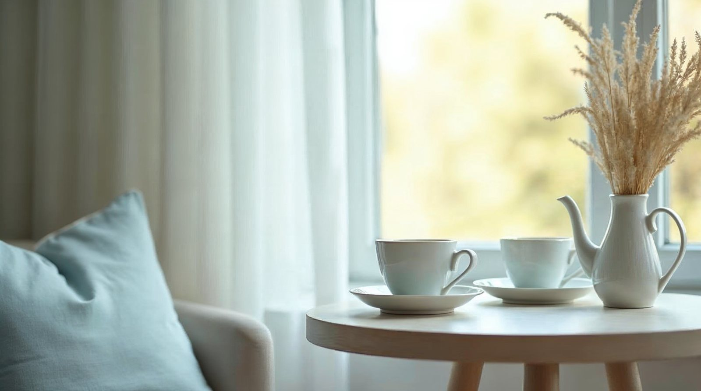
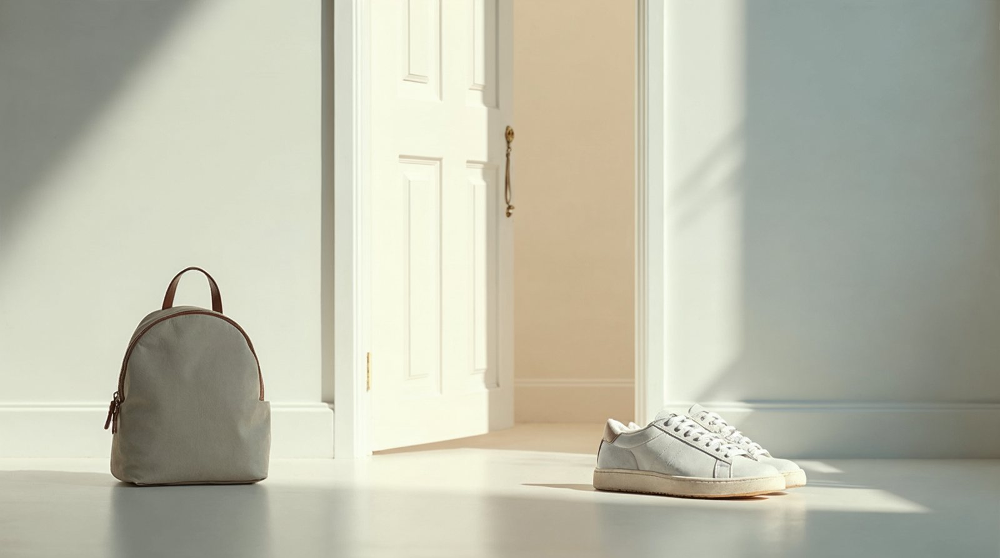
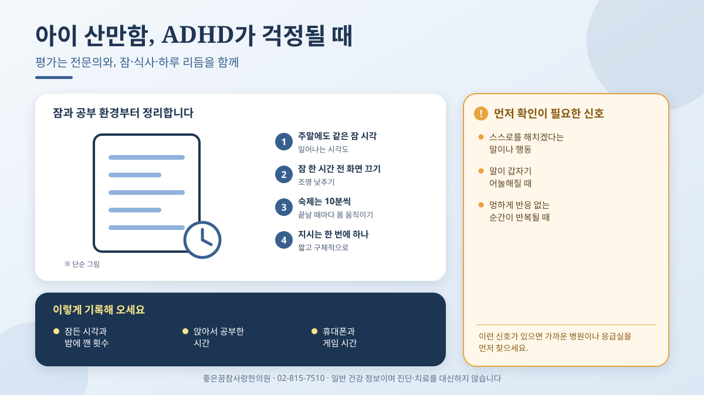

이종호 한의사 감수좋은꿈참사랑한의원 대표원장 (한의사 면허번호 19769)발행 2026-11-26 · 수정 2026-11-26
이 글의 차례
저녁 여덟 시, 식탁 위에 펼쳐 둔 수학 문제집은 아직 두 쪽째입니다. 아이는 연필을 돌리다 지우개를 만지작거리고, 물을 마시러 갔다가 거실에서 장난감을 집어 듭니다. "앉아서 다섯 문제만 풀자"는 말을 오늘만 몇 번째 하는지 모르겠습니다. 담임 선생님께 "수업 중에 자리를 자주 떠요"라는 연락을 받은 뒤로는 마음이 더 무겁습니다.
아이가 산만하고 집중을 못 하면 부모님 머릿속에 'ADHD'라는 단어가 떠오르기 쉽습니다. ADHD는 주의력결핍 과잉행동장애를 줄인 말로, 주의 집중의 어려움, 과잉 행동, 충동성이 나이에 비해 두드러지고 집과 학교처럼 여러 곳에서 오래 이어지는 상태를 말합니다.
진료실에서 부모님들께 자주 듣는 말이 있습니다. "제가 너무 예민한 걸까요, 아니면 제가 놓치고 있는 걸까요?" 두 마음이 동시에 드는 것이 당연합니다. 저도 같은 부모의 마음으로, 무엇을 먼저 확인하고 집에서는 무엇을 해 볼 수 있는지, 한의원에서는 무엇을 함께 살피는지 적어 보겠습니다.
왜 아이가 유독 집중하기 어려울까요
ADHD는 뇌에서 주의를 조절하고 행동을 멈추는 기능이 또래보다 천천히 자라거나 다르게 작동하는 상태로 이해되고 있습니다. 유전의 영향이 꽤 크다고 알려져 있고, 부모의 양육 방식 때문에 생기는 것은 아닙니다. 이 점을 먼저 말씀드리고 싶습니다.
증상은 크게 세 갈래로 나눠 봅니다. 하나는 주의력 부족으로, 물건을 자주 잃어버리고 끝까지 마무리하기 어려우며 말을 걸어도 딴생각을 하는 모습입니다. 다른 하나는 과잉 행동으로, 가만히 앉아 있기 힘들고 몸을 계속 움직이는 모습입니다. 마지막은 충동성으로, 차례를 기다리기 어렵고 생각보다 행동이 먼저 나가는 모습입니다.
아이마다 세 갈래가 섞인 비율이 다릅니다. 조용히 멍하게 있는 시간이 많아 오히려 눈에 덜 띄는 아이도 있습니다. 특히 여자아이는 과잉 행동보다 주의력 부족이 두드러져 늦게 알아차리는 경우가 있다고 알려져 있습니다.
한의학에서는 아이가 가만히 있지 못하고 쉽게 들뜨는 모습, 잠이 얕고 꿈이 많은 모습, 소화가 약하고 쉽게 지치는 모습 등을 몸의 열과 기운의 균형 쪽에서 살펴 왔습니다. 다만 이것은 진단을 대신하는 틀이 아니라, 평가를 받은 아이의 몸 상태를 함께 이해하는 방법입니다.
산만함과 ADHD, 이렇게 나눠 봅니다
산만하다고 다 ADHD는 아닙니다. 정확한 판단은 소아정신건강의학과 평가를 따르시고, 여기서는 이해를 돕는 정도로만 나눠 보겠습니다.
나이에 맞는 산만함
어린아이일수록 집중할 수 있는 시간이 짧은 것이 자연스럽습니다. 좋아하는 놀이에는 오래 몰두하지만 하기 싫은 숙제 앞에서는 몸을 비트는 모습은 많은 아이에게서 보입니다. 이 경우 환경을 조금 바꾸면 집중 시간이 늘어나는 경우가 많습니다.
다른 이유로 산만해 보이는 경우
잠이 부족하거나 코골이로 깊이 못 자는 아이는 낮에 산만하고 짜증이 늘기 쉽습니다. 시력이나 청력이 약해 수업 내용을 잘 따라가지 못하는 경우, 불안이나 우울로 마음이 다른 데 가 있는 경우, 학습의 어려움이 있는 경우도 집중을 못 하는 모습으로 보일 수 있습니다.
이사나 전학, 동생이 태어난 일, 가족의 큰 변화처럼 아이가 감당하기 벅찬 일이 있을 때도 일시적으로 산만해지기도 합니다. 그래서 언제부터, 어떤 계기로 달라졌는지가 중요한 단서가 됩니다.
평가를 받아 보시길 권하는 모습
산만함과 충동성이 반년 넘게 이어지고, 집과 학교처럼 두 곳 이상에서 비슷하게 나타나며, 그 때문에 학업이나 친구 관계에서 어려움이 생긴다면 소아정신건강의학과에서 평가를 받아 보시길 권합니다. 평가는 부모 면담, 선생님 설문, 아이 관찰과 검사를 함께 보는 경우가 많습니다.
나이에 따라 달라 보이는 모습
유치원 무렵에는 몸을 가만두지 못하고 위험한 놀이를 겁 없이 하는 모습이 먼저 눈에 띄는 경우가 많습니다. 초등학교에 들어가면 수업 시간에 앉아 있기, 숙제 마무리, 준비물 챙기기처럼 해야 할 일이 늘면서 어려움이 더 또렷해집니다.
고학년이나 중학생이 되면 겉으로 뛰어다니는 모습은 줄어도, 마음속의 안절부절못함과 미루는 습관, 시간 관리의 어려움으로 이어지기도 합니다. 공부량이 늘어나는 시기에 성적이 갑자기 흔들리며 처음 알게 되는 경우도 있습니다.
그래서 지금 아이의 나이에 맞춰 무엇이 어려운지를 구체적으로 적어 보는 것이 중요합니다. '산만하다'는 한 마디보다 '받아쓰기는 잘하는데 수학 문장제는 세 줄 넘어가면 포기한다'는 식의 설명이 평가와 상담에 훨씬 큰 도움이 됩니다.
잠과 코가 먼저 살펴볼 단서일 때
진료실에서 의외로 자주 만나는 것이 잠의 문제입니다. 코가 막혀 입을 벌리고 자거나, 코를 골고, 자다가 자주 뒤척이는 아이는 아침에 일어나기 힘들고 낮에 쉽게 짜증을 냅니다. 이 모습이 산만함과 겹쳐 보이기도 합니다.
이런 아이라면 소아청소년과나 이비인후과에서 코와 편도, 아데노이드 상태를 확인해 보시길 권합니다. 잠이 깊어지면 낮의 모습도 함께 달라지는 경우가 있어서, 저는 집중 이야기를 들을 때 꼭 잠부터 여쭙습니다.

부모님 마음도 함께 살핍니다
산만한 아이를 키우는 일은 생각보다 지치는 일입니다. 같은 말을 하루에 수십 번 반복하고, 학교에서 연락이 올 때마다 가슴이 내려앉습니다. 주변에서 "엄마가 너무 오냐오냐해서 그래"라는 말을 들으면 자책까지 겹칩니다.
부모님이 지치면 목소리가 높아지고, 아이는 혼나는 일이 늘어 자신감이 떨어지는 고리가 생기기 쉽습니다. 그래서 저는 아이의 이야기와 함께 부모님의 잠과 피로도 여쭙습니다. 부모님이 한숨 돌릴 틈을 찾는 것도 아이를 돕는 일의 일부라고 생각합니다.
스스로 점검해 보세요
아래 가운데 해당하는 줄이 있다면 표시해 두셨다가 진료 때 함께 보여 주세요. 진단을 위한 목록이 아니라, 아이의 모습을 정리해 보는 목록입니다.
- 숙제나 정리처럼 하기 싫은 일을 끝까지 마치기가 유난히 어렵다
- 물건을 자주 잃어버리고, 준비물을 자주 빠뜨린다
- 수업이나 식사 중에 자리에서 일어나는 일이 잦다
- 차례를 기다리기 힘들고, 남의 말이 끝나기 전에 끼어든다
- 학교 선생님께 비슷한 이야기를 여러 번 들었다
- 밤에 잠들기 어렵거나 코를 골고, 아침에 일어나기 힘들어한다
- 친구와 다툼이 잦거나, 혼나는 일이 많아 기가 죽어 보인다
먼저 이렇게 여쭙니다
부모님의 이야기를 들으며 저는 대략 이런 순서로 여쭙습니다. 처음부터 다 기억하지 못하셔도 괜찮습니다.
- 언제부터 산만하다고 느끼셨나요? 계기가 된 일이 있었나요?
- 집과 학교, 학원에서 모두 비슷한가요? 선생님께 들은 이야기가 있나요?
- 소아정신건강의학과나 소아청소년과에서 평가를 받으셨나요? 진단이나 약이 있나요?
- 잠은 몇 시에 들고 몇 시에 깨나요? 코골이나 입 벌리고 자는 모습이 있나요?
- 밥은 잘 먹나요? 편식, 변비, 배앓이는 없나요?
- 휴대폰이나 게임은 하루에 얼마나 하나요?
- 시력과 청력 검사는 언제 받았나요?
아이에게도 직접 몇 가지를 물어봅니다. 학교에서 뭐가 힘든지, 혼나는 일이 많아 속상하지는 않은지, 밤에 잠은 잘 오는지 같은 것들입니다. 아이의 대답은 짧아도 부모님이 모르던 마음이 담겨 있을 때가 많습니다.
일상에서 먼저 해 볼 수 있는 것
생활을 바꾼다고 ADHD가 사라진다고 말씀드릴 수는 없습니다. 다만 아이가 조금 덜 혼나고, 조금 더 해내는 경험을 늘리는 바탕은 만들어 볼 수 있습니다. 아래에서 하나만 골라 시작해 보세요.
- 잠드는 시각과 일어나는 시각을 주말에도 비슷하게 맞추기
- 잠들기 한 시간 전에는 휴대폰과 게임을 끄고, 조명을 낮추기
- 숙제는 10분씩 잘게 나누고, 하나 끝날 때마다 짧게 몸을 움직이게 하기
- 책상 위에는 지금 할 것 하나만 두고, 나머지는 치워 두기
- 지시는 한 번에 하나씩, 짧고 구체적으로 말하기
- 잘한 일은 그 자리에서 바로, 구체적으로 칭찬하기
아침을 거르거나 단 간식으로 끼니를 대신하면 오전 집중이 더 흔들리기 쉽습니다. 밥과 단백질 반찬이 있는 아침을 조금이라도 챙겨 보세요. 낮에 바깥에서 뛰어노는 시간을 늘리는 것도 밤잠과 낮의 기분에 도움이 되는 경우가 많습니다.
혼내는 말보다 '다음엔 이렇게 해 보자'는 말을 늘리는 것도 중요합니다. 하루에 혼나는 횟수보다 칭찬받는 횟수가 많아지면 아이의 표정부터 달라지는 경우가 많습니다.
한의원에서 함께 살필 수 있는 경우
- 소아정신건강의학과 평가와 치료를 이어 가면서 잠과 식사, 소화 같은 몸 상태를 함께 상의하고 싶은 경우
- 잠이 얕고 자주 깨며, 낮에 쉽게 짜증을 내고 들뜨는 경우
- 입이 짧고 소화가 약하며 쉽게 지치는 경우
- 평가 결과 ADHD는 아니라고 들었지만 산만함과 잠, 긴장이 함께 신경 쓰이는 경우
좋은꿈참사랑한의원에 처음 오시면 소아정신건강의학과나 소아청소년과에서 받은 평가와 치료부터 확인합니다. 그다음 아이가 편안한 자세로 맥을 짚고, 잠과 식사, 소화, 대변, 땀, 코막힘, 낮의 기분을 여쭙고, 필요하다고 판단되면 혀와 배도 살펴봅니다.
이렇게 모은 이야기를 바탕으로 침, 한약 상담, 생활 관리 가운데 지금 아이에게 맞는 방법을 함께 정합니다. 아이가 침을 무서워하면 억지로 하지 않고, 생활 관리와 상담 위주로 시작하기도 합니다. 한약을 상의할 때는 먹고 있는 약을 모두 확인하며 신중하게 정합니다.
한의원 진료가 소아정신건강의학과 평가나 치료를 대신하지는 않습니다. 평가와 치료는 그대로 이어 가시고, 그 바탕이 되는 아이의 잠과 몸 상태는 함께 살피겠습니다.
이렇게 기록해 오시면 상담이 쉬워집니다
진료실에 앉으면 지난 몇 주가 잘 떠오르지 않습니다. 2주만 아래처럼 적어 보세요.
- 잠든 시각, 깬 시각, 밤에 깬 횟수와 코골이 여부
- 아침과 저녁 식사를 했는지, 대략 얼마나 먹었는지
- 숙제나 공부를 몇 분쯤 앉아서 했는지
- 학교나 학원에서 들은 이야기
- 크게 혼났거나 다툰 날, 반대로 잘 지낸 날
- 휴대폰과 게임 시간
- 먹고 있는 약과 시작한 날짜
잘 지낸 날의 기록도 꼭 남겨 주세요. 어떤 날 아이가 편안했는지가 다음 계획을 세우는 데 가장 큰 단서가 됩니다.
기록은 부모님 한 분만 하기보다 함께 사는 가족이 나눠 적으면 훨씬 수월합니다. 학교 알림장이나 선생님 메시지를 사진으로 모아 두는 것도 좋습니다. 이 기록은 소아정신건강의학과 평가 때도 그대로 쓰일 수 있습니다.
아이가 글을 쓸 수 있는 나이라면 하루에 한 줄, '오늘 제일 잘한 일'을 스스로 적어 보게 하는 것도 권합니다. 아이가 자기 하루를 돌아보는 작은 연습이 되고, 부모님에게는 아이의 마음을 엿보는 창이 됩니다.

학교와 함께하기
담임 선생님과 짧게라도 이야기를 나눠 두면 도움이 됩니다. 자리를 앞쪽으로 바꾸거나, 과제를 작게 나눠 주거나, 잘한 일을 알려 주는 것만으로도 아이의 하루가 달라지기도 합니다.
처방받은 약이 있다면 처방한 의사와 상의 없이 줄이거나 끊지 않습니다. 한의원 진료를 함께 받을 때도 그 약은 그대로 두시고, 먹고 있는 약을 모두 알려 주세요. 다음에 오시면 그사이 아이의 잠과 학교생활이 어땠는지부터 여쭙겠습니다.
이런 증상은 먼저 확인이 필요합니다
- 아이가 스스로를 해치겠다는 말을 하거나 그런 행동을 보이는 경우
- 갑자기 말이 어눌해지거나 멍하게 반응이 없는 순간이 반복되는 경우
이런 신호가 있으면 한의원보다 가까운 병원이나 응급실을 먼저 찾으세요.
함께 읽으면 좋은 글
- 아이가 눈을 자꾸 깜빡이거나 킁킁거리는 틱이 보일 때 부모는 무엇을 살피나요?
- 아이가 휴대폰을 보다가 밤늦게 잠들 때는 어떻게 바꿔 갈 수 있을까요?
- 아이가 자면서 코를 골고 입으로 숨 쉴 때는 어떻게 살피나요?
- 아이가 밥을 몇 숟가락 먹고 안 먹으려 할 때는 무엇을 먼저 살피나요?

여쭙는 것
- 언제부터 산만하다고 느끼셨나요? 계기가 된 일이 있었나요?
- 집과 학교, 학원에서 모두 비슷한가요? 선생님께 들은 이야기가 있나요?
- 소아정신건강의학과나 소아청소년과에서 평가를 받으셨나요? 진단이나 약이 있나요?
생활에서 해 볼 것
- 잠드는 시각과 일어나는 시각을 주말에도 비슷하게 맞추기
- 잠들기 한 시간 전에는 휴대폰과 게임을 끄고, 조명을 낮추기
- 숙제는 10분씩 잘게 나누고, 하나 끝날 때마다 짧게 몸을 움직이게 하기
한의원에서 함께 살필 것
- 소아정신건강의학과 평가와 치료를 이어 가면서 잠과 식사, 소화 같은 몸 상태를 함께…
- 잠이 얕고 자주 깨며, 낮에 쉽게 짜증을 내고 들뜨는 경우
- 입이 짧고 소화가 약하며 쉽게 지치는 경우
먼저 확인이 필요한 신호
- 아이가 스스로를 해치겠다는 말을 하거나 그런 행동을 보이는 경우
- 갑자기 말이 어눌해지거나 멍하게 반응이 없는 순간이 반복되는 경우
한눈에 보는 표
| 구분 | 핵심 |
|---|---|
| 여쭙는 것 | 언제부터 산만하다고 느끼셨나요? 계기가 된 일이 있었나요? 집과 학교, 학원에서 모두 비슷한가요? 선생님께 들은 이야기가 있나요? |
| 생활에서 해 볼 것 | 잠드는 시각과 일어나는 시각을 주말에도 비슷하게 맞추기 잠들기 한 시간 전에는 휴대폰과 게임을 끄고, 조명을 낮추기 |
| 한의원에서 함께 살필 것 | 소아정신건강의학과 평가와 치료를 이어 가면서 잠과 식사, 소화 같은 몸 상태를 함께 상의하고 싶은 경우 잠이 얕고 자주 깨며, 낮에 쉽게 짜증을 내고 들뜨는 경우 |
| 먼저 확인이 필요한 신호 | 아이가 스스로를 해치겠다는 말을 하거나 그런 행동을 보이는 경우 갑자기 말이 어눌해지거나 멍하게 반응이 없는 순간이 반복되는 경우 |
자주 묻는 질문
한약을 먹으면 ADHD 약을 끊을 수 있나요?
처방받은 약은 처방한 의사와 상의 없이 줄이거나 끊지 않습니다. 한의원에서는 약을 이어 가는 동안 아이의 잠, 식사, 소화, 긴장 같은 몸 상태를 함께 살피며 침과 한약 상담, 생활 관리를 상의합니다.
산만한데 꼭 병원 평가를 받아야 하나요?
산만함과 충동성이 반년 넘게 이어지고 집과 학교에서 모두 어려움이 생긴다면 소아정신건강의학과 평가를 권합니다. 평가 결과는 아이를 이해하고 도울 방향을 정하는 데 쓰이는 정보입니다.
아이가 침을 무서워하는데 괜찮을까요?
억지로 하지 않습니다. 아이가 편안해할 때까지 상담과 생활 관리 위주로 진료하고, 아이와 부모님이 원하실 때 침을 상의합니다.
단 음식을 끊으면 집중이 나아지나요?
단 음식만으로 집중이 정해진다고 말하기는 어렵습니다. 다만 단 간식으로 끼니를 대신하지 않고, 아침과 저녁을 제때 챙기는 것은 낮의 컨디션을 고르게 하는 바탕이 됩니다.
좋은꿈참사랑한의원은 재진 때 지난번 이야기부터 이어서 여쭙니다. 진료시간과 예약은 오시는 길에서 확인하세요.
어디서 상담받을 수 있나요?
좋은꿈참사랑한의원은 서울 동작구 만양로2길 2 신성빌딩 3층·5층(서울 동작구 상도동, 7호선 상도역 3번 출구 근처)에 있습니다. 한의사 3명(이종호 대표원장, 조영기 수석진료원장, 정원영 진료원장)이 진료합니다. 진료시간은 평일 09:30~20:00(점심 13:00~14:00), 토·일·공휴일 09:30~15:00이며, 방문 전 전화로 확인을 권합니다. 예약은 네이버 예약, 카카오톡 상담, 전화 02-815-7510로 받습니다.
이 글은 일반적인 건강 정보이며 개인의 진단이나 치료를 대신하지 않습니다. 증상이 있거나 복용 중인 약이 있다면 진료를 통해 확인하세요. 치료 효과는 개인마다 다를 수 있습니다.
작성 기준: 일반적으로 알려져 있는 건강 정보를 참고해 정리했습니다(대표원장 감수). 증상 기록은 1~2주 동안 하루 1회, 비슷한 시간에 적어 오시면 지난 상태와 비교하기 쉽습니다.